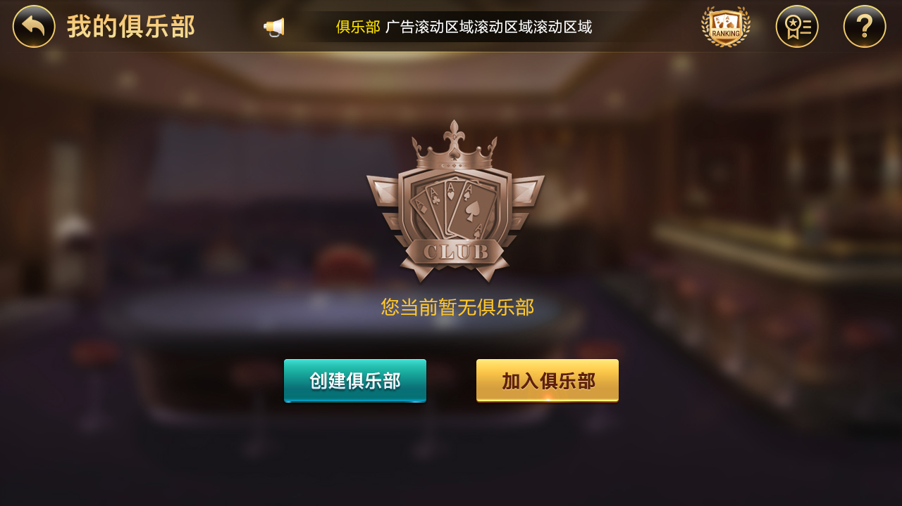

Discover and filter
Compare online users, average pot and activity. Filter full/empty tables, Hold'em, AOF, 6+ Short Deck and seat counts.
Poker Club · Private Table · Friends Game
Real product screens show club discovery, membership review, accounting and private-table settings. The repository provides C++/Tars hall, room-lifecycle and data-access components.
Product Functions
This page uses the actual UI to explain how players discover a club, apply for membership, review club activity and configure a table.
Compare online users, average pot and activity. Filter full/empty tables, Hold'em, AOF, 6+ Short Deck and seat counts.
Apply by club ID/name, view online status and process membership applications from the club profile.
Review daily/monthly accounting and insurance records, plus level, wealth and activity rankings.

Game Entry
The filter combines game mode, seats and table availability. These are screenshot-demonstrated product settings; the page does not claim that every complete game algorithm is included.

Join Flow
The UI states that a player can join up to five clubs. Create/join entry points, club profiles and application review form a coherent membership flow.

Membership
The club profile presents members and online state with entry points for review, match records and club billing.

Table Setup
Public files verify hall/account interfaces, room and player lifecycle, action timeout, Tars MySQL access, mall/goods and sign-in protocols, plus selected Unity scenes.
Hall entry, gateway state, profiles, wealth, experience, tasks, messages and mail.
Sit down, stand up, offline, game start, user mapping and action timeout.
MySQL access, item purchase/dispatch/exchange, sign-in and service-fee interfaces.
Selected Login, Hall and GamePlay3D Unity scenes plus platform version configuration.
Accounting, rankings and club creation add a management view beyond the player lobby.



Telegram: @xuzongbin001 Email: masterai918@gmail.com
The public directory requires external XGame/Tars protocols, database structures and deployment configuration; it is not a verified one-click commercial client. Follow applicable laws, platform policies, privacy and minor-protection rules. Do not use it for illegal gambling.